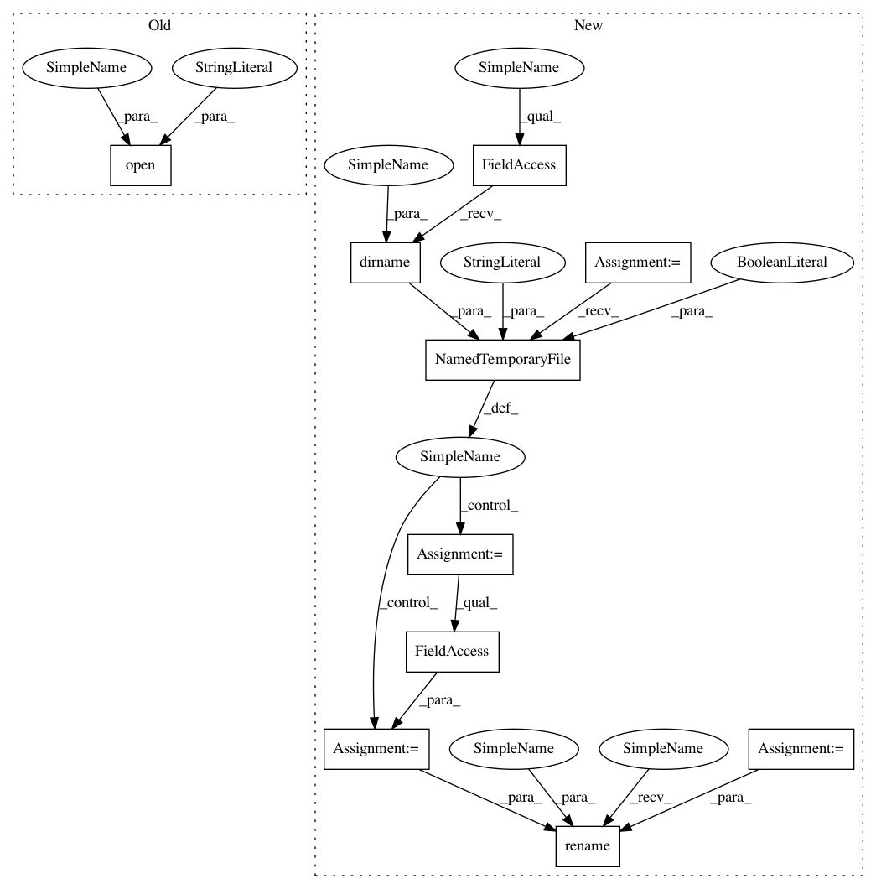

ad589ffdb43ec55d3465451ef9c7602faa28589e,autosklearn/util/backend.py,Backend,save_ensemble,#Backend#Any#Any#Any#,193
Before Change
filepath = os.path.join(self.get_ensemble_dir(),
"%s.%s.ensemble" % (str(seed), str(idx).zfill(
10)))
with open(filepath, "wb") as fh:
pickle.dump(ensemble, fh)
def _get_prediction_output_dir(self, subset):
After Change
filepath = os.path.join(self.get_ensemble_dir(),
"%s.%s.ensemble" % (str(seed),
str(idx).zfill(10)))
with tempfile.NamedTemporaryFile("wb", dir=os.path.dirname(
filepath), delete=False) as fh:
pickle.dump(ensemble, fh)
tempname = fh.name
os.rename(tempname, filepath)
def _get_prediction_output_dir(self, subset):
return os.path.join(self.internals_directory,
"predictions_%s" % subset)
In pattern: SUPERPATTERN
Frequency: 4
Non-data size: 10
Instances
Project Name: automl/auto-sklearn
Commit Name: ad589ffdb43ec55d3465451ef9c7602faa28589e
Time: 2016-02-10
Author: feurerm@informatik.uni-freiburg.de
File Name: autosklearn/util/backend.py
Class Name: Backend
Method Name: save_ensemble
Project Name: automl/auto-sklearn
Commit Name: ad589ffdb43ec55d3465451ef9c7602faa28589e
Time: 2016-02-10
Author: feurerm@informatik.uni-freiburg.de
File Name: autosklearn/util/backend.py
Class Name: Backend
Method Name: save_model
Project Name: automl/auto-sklearn
Commit Name: ad589ffdb43ec55d3465451ef9c7602faa28589e
Time: 2016-02-10
Author: feurerm@informatik.uni-freiburg.de
File Name: autosklearn/util/backend.py
Class Name: Backend
Method Name: save_datamanager
Project Name: automl/auto-sklearn
Commit Name: ad589ffdb43ec55d3465451ef9c7602faa28589e
Time: 2016-02-10
Author: feurerm@informatik.uni-freiburg.de
File Name: autosklearn/util/backend.py
Class Name: Backend
Method Name: save_predictions_as_npy